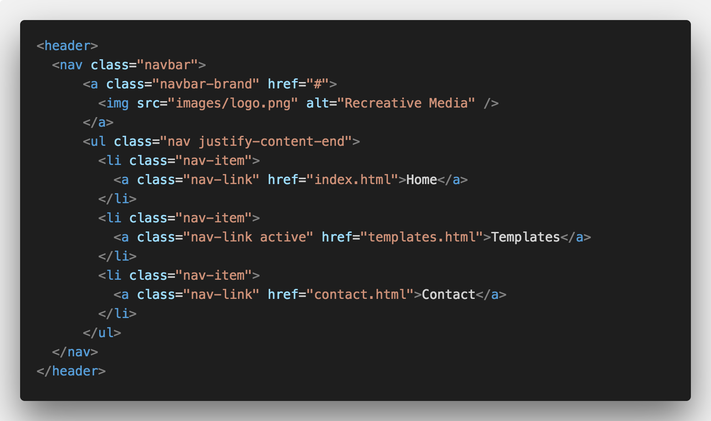
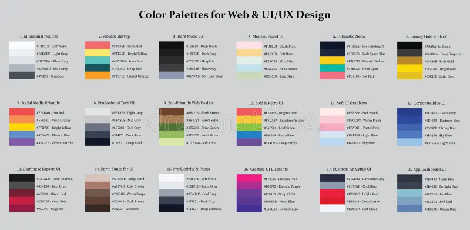
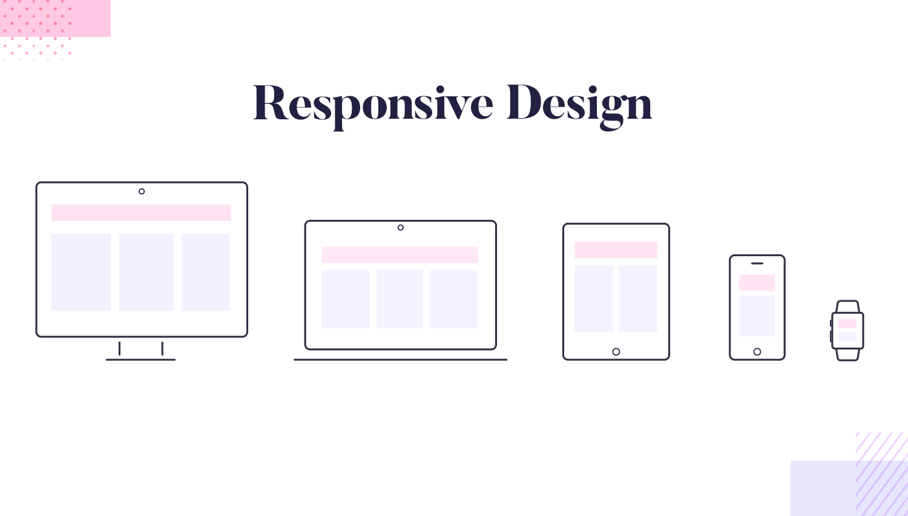

Introduction to Web Development
This page introduces the foundational concepts of web development using HTML and CSS. The goal is to help beginners understand how websites are structured, styled, and built.
HTML Structure Basics
Learning Goal
Understand how HTML is used to structure content on a webpage using elements like headings, paragraphs, images, and links.
Core Content
HTML (HyperText Markup Language) forms the foundation of every website. It organizes content so browsers can display text, images, and media in a structured format. Tags such as <h1>, <p>, and <img> define different parts of a webpage.

CSS Styling Fundamentals
Learning Goal
Learn how CSS is used to control the appearance of a website, including colors, fonts, spacing, and layout design.
Core Content
CSS (Cascading Style Sheets) is used to style HTML elements. It allows developers to change how a website looks without changing its structure. CSS controls visual design such as backgrounds, typography, and alignment.

Website Layout and Structure
Learning Goal
Understand how web pages are organized using containers, sections, and layout systems like flexbox.
Core Content
Modern websites are built using structured layouts that organize content into sections such as headers, navigation bars, main content, and footers. Tools like Flexbox help developers create responsive layouts that adjust to different screen sizes.

| Concept | Type | Purpose | Skill Developed |
|---|---|---|---|
| HTML Structure | Markup | Builds webpage content structure | Logical Organization |
| CSS Styling | Design | Controls visual appearance | Design Thinking |
| Page Layout | Structure | Organizes content into sections | UI/UX Awareness |
| Responsive Design | Adaptation | Ensures usability on all devices | Problem Solving |
| These concepts form the foundation of modern web development. | |||